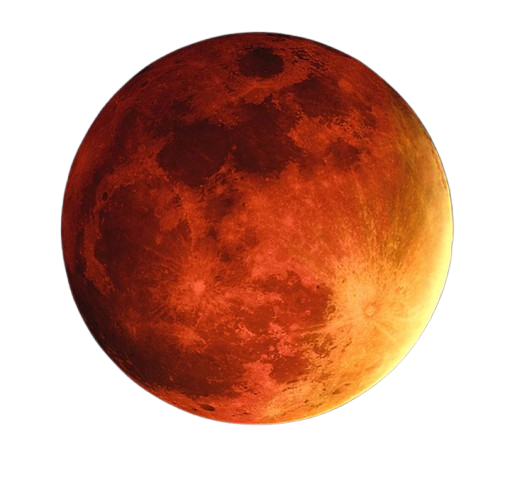

Celestials

Mars's Info
Mars is the fourth planet from the Sun and is commonly known as the Red Planet due to its reddish appearance,
which comes from iron oxide on its surface. It is a terrestrial planet with rocky terrain, vast deserts, ancient
riverbeds, and the largest volcano in the solar system, Olympus Mons. Mars has a thin atmosphere composed mainly of
carbon dioxide, making it cold and incapable of supporting liquid water on the surface today. However, evidence such
as dried channels and polar ice caps suggests that Mars once had flowing water and a warmer climate. The planet has
two small moons, Phobos and Deimos, which are irregular in shape and orbit close to it.
Mars plays an important role in scientific research because it may provide clues about the possibility of
life beyond Earth. Its day length is similar to Earth’s, lasting about 24.6 hours, but a Martian year is
longer, taking 687 Earth days to complete one orbit around the Sun. The planet experiences seasons due to
its axial tilt, much like Earth. Robotic missions have explored Mars to study its geology, climate, and
potential habitability. With its intriguing features and similarities to Earth, Mars remains a key focus
for future space exploration and possible human settlement.
These are some of the following 13 interesting factual points about the "planet_Mars"
- Mars is the fourth planet from the Sun.
- It is called the Red Planet due to iron oxide on its surface.
- Mars is a terrestrial (rocky) planet.
- The atmosphere of Mars is thin and mostly carbon dioxide.
- Mars has two moons, Phobos and Deimos.
- It hosts Olympus Mons, the largest volcano in the solar system.
- Mars has Valles Marineris, one of the largest canyon systems known.
- A day on Mars lasts about 24.6 hours.
- One Martian year equals 687 Earth days.
- Mars has polar ice caps made of water ice and dry ice.
- Evidence suggests Mars once had liquid water on its surface.
- Mars experiences seasons due to its axial tilt.
- Mars is a major target for robotic and future human exploration.